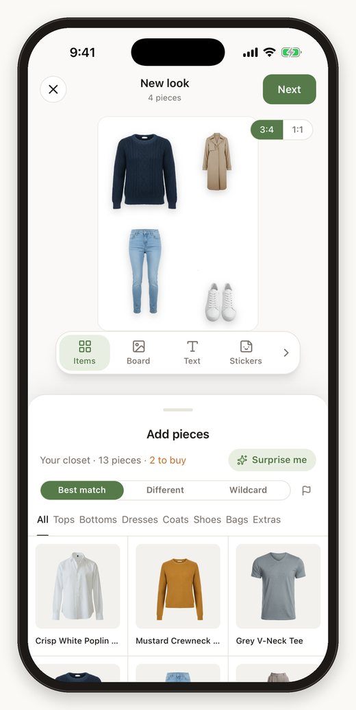
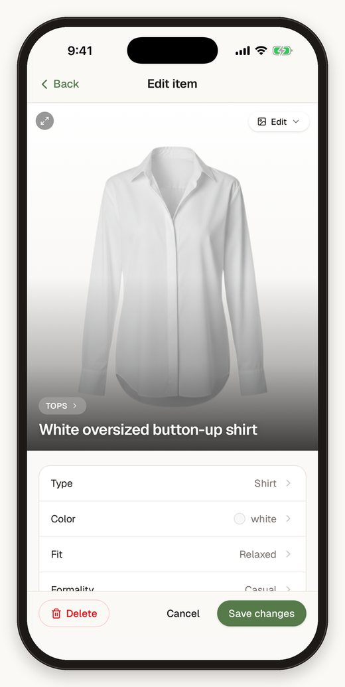
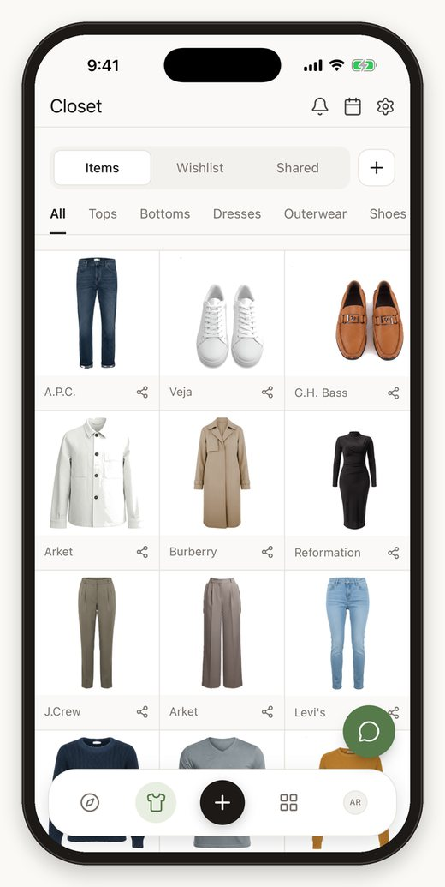
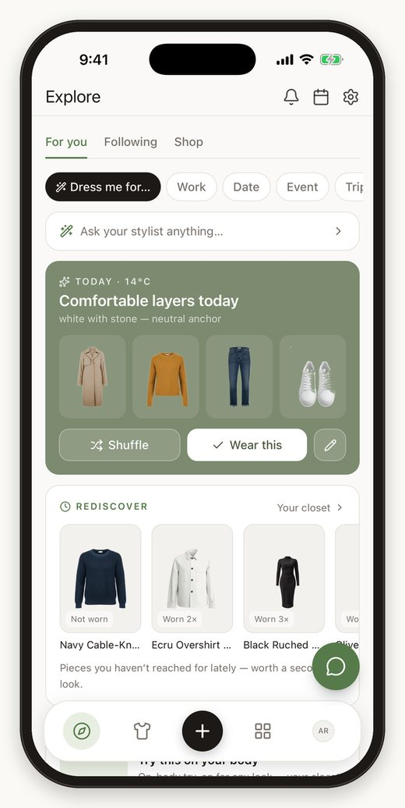
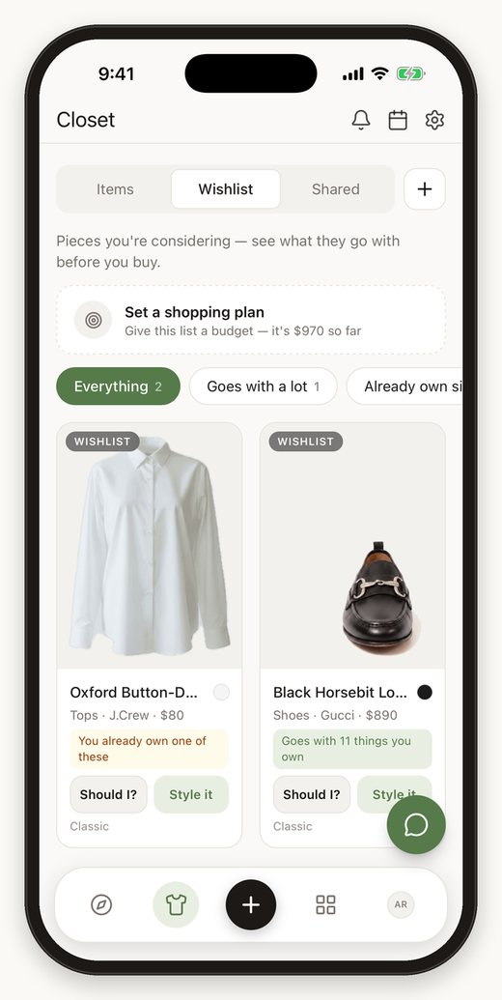
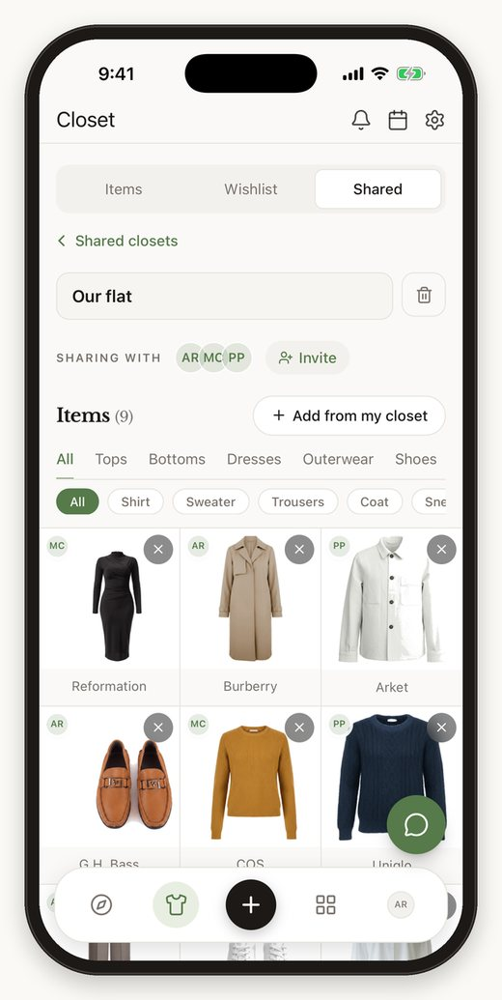
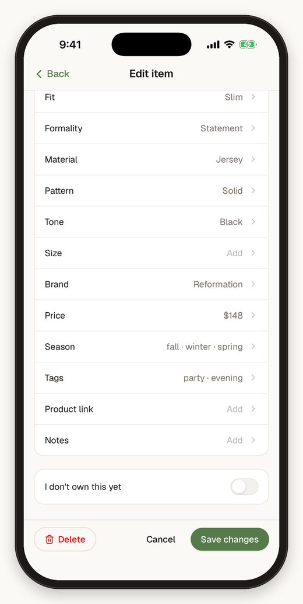

Work / Your Personal Wardrobe
Self-built productJul–Aug 2026
Your Personal Wardrobe
An iPhone and web app that turns one photo of your clothes into a tagged digital closet and weather-aware outfits. Every change was measured with evaluation harnesses: clashing outfits fell from up to 30% to 0%, with 100% category accuracy on a 157-item test closet.

The Challenge
Most of us own far more clothing than we wear. A WRAP study of nearly 8,000 UK adults found that about 30% of clothing in UK wardrobes had not been worn for a year. We forget what we own, we buy near-duplicates, and every purchase is made without checking it against the closet.
Closet apps have tried to fix this, but setup is the wall: photographing and labelling every piece by hand takes hours, and most people quit before they see any value. I wanted to know whether modern AI could make that setup take one photo, and whether the result could be good enough to trust every morning.
What I Built
Capture. Any photo works, even a messy mirror selfie. A vision model finds every garment in the picture, so one photo can become several closet items.
Cut out and tag. The background is removed (on the phone by default, with a segmentation model or Apple Vision as alternatives), then an LLM tags 14 attributes as strict JSON: category, type, colour, season, fit, material, pattern, formality and more.
Product shot. Clothing is redrawn as a clean ghost-mannequin or flat-lay image and normalised onto one standard canvas, so the closet looks like a shop, not a camera roll.
Style. An outfit engine builds three looks from the closet for the live weather forecast, each with a plain-language reason. An AI stylist chat can only choose from those real candidates, so it never invents a garment.
Decide and share. Every wishlist item gets a buy, wait or skip verdict against what you own, with cost per wear. Friends can co-own a shared closet and style each other live, and AI try-on shows any look on you.

Key Numbers
Every change was measured before it was claimed, using evaluation harnesses I built alongside the product.
Inside the App
Real screens from the iOS app, running on the iPhone simulator with a demo closet.





Measuring the Outfit Engine
The first outfit engine looked fine in demos but, measured properly, it mixed gym clothes with smart pieces far too often. I rebuilt it as a three-stage pipeline: hard rules reject combinations that never work, seven weighted signals (colour harmony in CIELAB space, formality, context, wear history and more) score what is left, and maximal marginal relevance picks three looks that are good and different from each other.
| Screen (120 runs each) | Old engine | New engine |
|---|---|---|
| Today | 9.4% | 0% |
| Stylist | 11.8% | 0% |
| Explore | 20.0% | 0% |
| Rediscover | 25.3% | 0% |
| Calendar | 26.7% | 0% |
| Travel | 29.6% | 0% |
| Recreate | 30.0% | 0% |
The lesson I keep: a feature that “works” is a hypothesis until it is measured. The same harness also caught a silent regression that had dropped accessories from 80% of looks to 5% while every test stayed green.
Key Outcomes
- Designed and shipped a full product solo in five weeks (392 commits, about 52,000 lines of TypeScript): iPhone app on TestFlight and web app from one codebase, 35 API routes, 24 database migrations.
- Built an AI pipeline that turns a single photo into structured closet data, with 100% category accuracy and 0 dropped model answers on a 157-item evaluation set.
- Rebuilt the recommendation engine and proved the gain with a repeatable harness: clashing outfits from up to 30% to 0% on all seven screens.
- Designed closet-aware shop ranking with team-draft interleaving for A/B testing, and a colour-aware fix that cut wrong-colour results for one query from 82% to 0%.
- Modelled the data in Postgres with row-level security on every table, pgvector for similarity search, and an event log for behavioural analytics.
- Running a private beta with 24 testers and 291 catalogued garments; reported the early numbers as they are, and documented open gaps rather than hiding them.